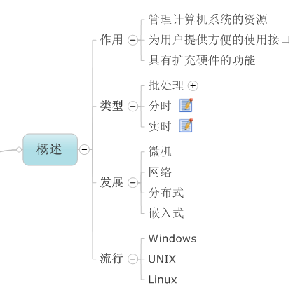
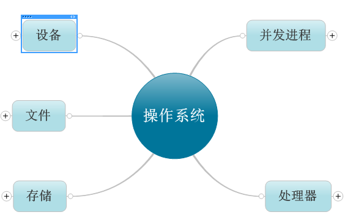
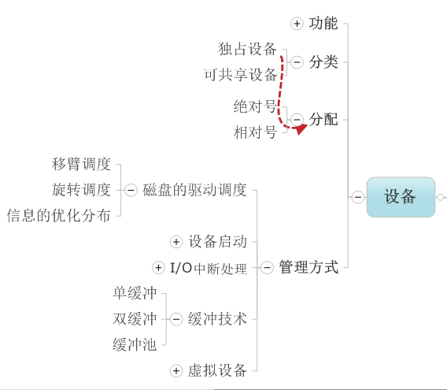
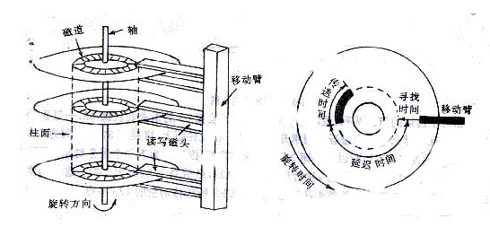
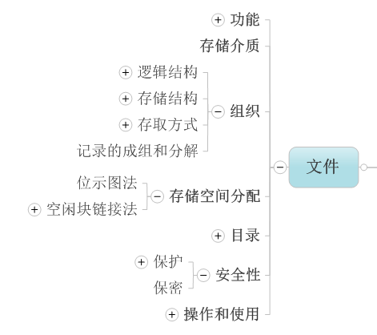
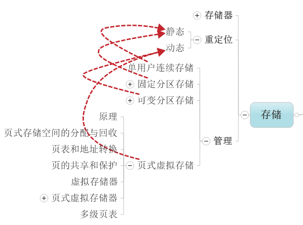
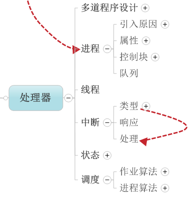
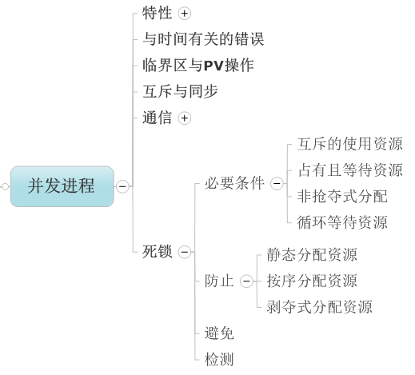

操作系统是管理计算机硬件资源，控制其他程序运行并为用户提供交互操作界面的系统软件的集合。它是计算机系统的关键组成部分，负责管理与配置内存、决定系统资源供需的优先次序、控制输入与输出设备、操作网络与管理文件系统等基本任务。

操作系统所处的位置
操作系统的管理分为5大部分,当然我觉得也可以将并发进程放到处理器模块中.


这部分重要的内容就是磁盘的驱动调度:

寻找时间:磁头在移动臂带动下移动到指定柱面所需的时间.
延迟时间:指定扇区旋转到磁头位置所需的时间.
传送时间：由指定的磁头把磁道上的信息读到主存储器或把主存储器中信息写到磁道上所需的时间。
移臂调度:目标是尽可能地减少寻找时间.
1）先来先服务算法：该算法实际上不考虑访问者要求访问的物理位置，而只是考虑访问者提出访问请求的先后次序。有可能随时改变移动臂的方向。
2）最短寻找时间优先调度算法：从等待的访问者中挑选寻找时间最短的那个请求执行，而不管访问者的先后次序。这也有可能随时改变移动臂的方向。
3）电梯调度算法：从移动臂当前位置沿移动方向选择最近的那个柱面的访问者来执行，若该方向上无请求访问时，就改变臂的移动方向再选择。
旋转调度:目标是尽可能地减少延迟时间

空闲块链接法:
在UNIX系统中，将空闲块分成若干组，每100个空闲块为一组，每组的第一空闲块登记了下一组空闲块的物理盘块号和空闲块总数。如果一个组的第一个空闲块号等于0，则有特殊的含义，意味着该组是最后一组，即无下一个空闲块。
分配空闲块的时候，从前往后分配，先从第一组开始分配，第一组空闲的100块分完了，才进入第二组。
释放空闲块的时候正好相反，从后往前分配，先将释放的空闲块放到第一组，第一组满了，在第一组前再开辟一组，之前的第一组变成第二组。

页式虚拟存储:页式存储管理是把存储器分成大小相等的许多块，每个区称为一块。与此对应，编制程序的逻辑地址也分成页，页的大小与块的大小相等。
在进行存储分配时，总是以块为单位进行分配。一个作业的信息有多少页，把它装入主存时就给它分配多少块。但是分配给作业的主存块可以是不连续的，即作业信息可以按页分散存放在主存的空闲块中。
分页式存储管理的优点：
解决外部碎片，允许程序的物理空间地址非连续。
页面调度：1，先进先出调度算法 2，最近最久未使用调度算法
3，最近最不经常使用调度算法

进程：一个程序在一个数据集上的一次执行称为一个进程.一个程序要干很多事即很多个进程(一个程序干的一件事称为一个进程).进程是独享资源的.
线程:线程是进程中可独立执行的子任务.一个进程可以细分为多个线程.线程是共享资源的.

对于PV操作和互斥与同步问题,请看我的上篇博客.http://blog.csdn.net/hejingyuan6/article/details/8776429